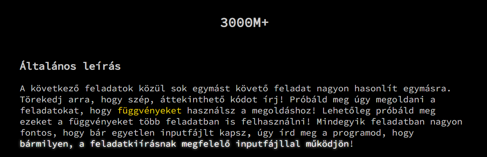

3000-es feladat
Erre a kódra épülnek az első 3000-es feladatok:
static int[] Beolvasas()
{
string elso_sor = Console.ReadLine();
string[] elso_sor_tombje = elso_sor.Split(' ');
int N = Convert.ToInt32(elso_sor_tombje[0]);
int K = int.Parse(elso_sor_tombje[1]);
int[] t = new int[N];
for (int i = 0; i < N; i++)
{
string sor = Console.ReadLine(); // sor = "105"
t[i] = Convert.ToInt32(sor);
}
}
